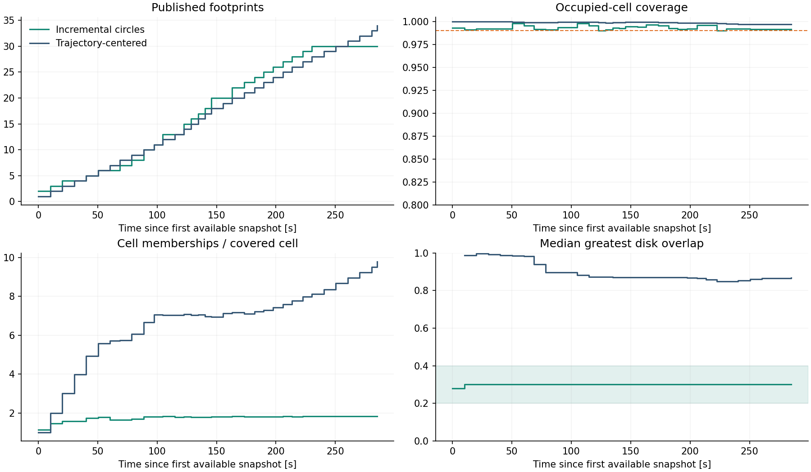

Radius 40 m · 99% occupied-cell coverage · desired greatest disk overlap 30% ±10 percentage points.
The trajectory-centered comparator keeps its original 80 m radius; the observed map prefixes are identical.
Causal growing union of 34 retained prepared area snapshots, not every original scan. Gravity is fixed from the first snapshot. No trajectory or future map enters circle placement. Published circles remain fixed.

The overlap band is a secondary objective. Coverage and fewer added circles take priority; deviations are retained in the diagnostics. Counts are certified only within that update’s candidate set when HiGHS proves optimality. Footprint geometry update/freeze policy is deferred.
Summary · All update/solver/overlap diagnostics · Fixed center history · Source and input hashes · Timeline PDF